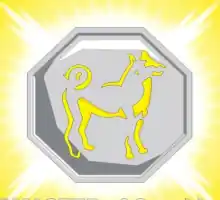

Dentre as virtudes do nativo de Cão estão as habilidades artísticas altamente desenvolvidas e o apreço pela justiça, esse nativo também possui um espírito pacífico e organizado. Os nativos do signo de Cão são as pessoas nascidas nas seguintes datas:
Talismã do Cachorro
Esse talismã faz com que o usuário se torne imortal alem de ter um tipo de rejuvenecimento de sua energia.